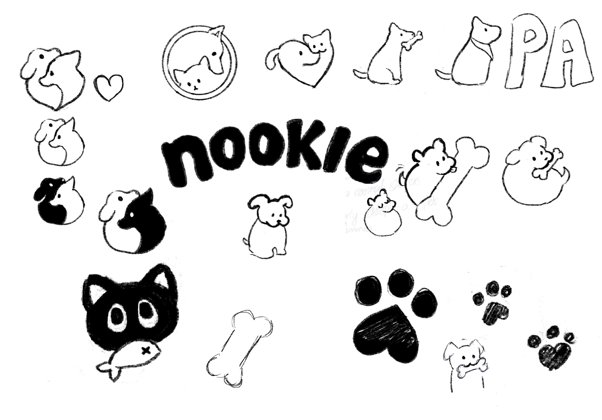

In this project, I alongside an AI create a logo. I knew I wanted to do a logo but I had a hard time deciding on what type of business the logo should be based on. I started with a bit of concept mapping to get a better idea on the direction for this project.
Below is the prompt created based on the concept map.
Create a logo for a bakery called “Nookie.” Nookie caters to people and their pets, making pastries for both people and their furry friends. Nookie is very community oriented and partners with local shelters to host an adopt-a-pal event every summer. They pride themselves in being a safe place for people and their pets, helping other pen owners connect with each other. Their tagline is “A nook for you & your furry friends.”
For the first part of the project, I sketched a few ideas out taking inspiration from my daily life and online sources like Pinterest.
In this project, I alongside an AI create a logo for a brand called "Nookie." The prompt that myself and the AI followed is shown below: